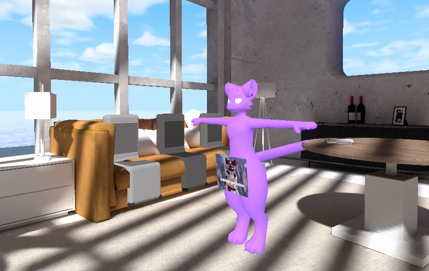

World Development
Why?
Hello, and thank you for being here. My primary purpose of this guide is to help catalogue my techniques and skills, both for my own future reflection and to document and share these techniques for other who wish to get into making virtual worlds in VRChat and beyond. Forgive me but I'd like to infodump my thoughts, if you just want a tutorial, skip this section.
A lot of art and creativity flourishes and dies by the privileges and access to resources by the artists that create it. The same way some people pontificate on the number of Albert Einsteins equivalents are being born into economic situations they can't thrive; so too do artists of all kinds. But we live in an age where access to the internet is ubiquitous for many, and it's arguably visibly on the horizon and in the air for those who desire it and don't yet have it.
By sharing my knowledge about virtual world development, I can hand the tools I use to the people who need it for their own endeavors.
What to Expect
First off I want to set expectations; like every form of art, you don't make virtual worlds to get rich. Some of you might find a way or get lucky, but it's never a given. You make art because you love it. Not for your family or friends, but for you alone.
I've spent way to long grinding trying to strike it big, make content that will get me attention. All of it, and I do mean all of it has ultimately failed. Even some of my biggest successes and new accomplishments never felt like my accomplishments because I wasn't doing it for myself. Forgotten Cat Tree, one of my biggest successes took months of labor and burnout only to succeed and feel... meh, I didn't feel any proud of it.
With that successful failure, I started making worlds just for myself, nobody else, and that started feeling much better. I went on to make Abstract Backyard Glow and that did moderately well and more or less stepped away from world making, it felt wrong, I was burnt out, and didn't want to do it anymore. Then one day, I made a joke with a friend and slapped together a VRChat meta shitpost world in under two hours one night before bed. And god damnit if that didn't make it through the VRChat Labs clout-gate in less than 48hrs with little to no marketing.
In contrast with worlds I've spent 100s of hours working on, that really hurts.
Which is why I say don't do this unless you genuinely want too. Don't let yourself get carried away, chasing arbitrary numbers and success for the sake of having something to show for it. Just make things because you enjoy making things. Create things to scratch that itch to create.
If you don't feel like you have an itch to create, that's okay too. Usually that just means you haven't found the right medium for you or you just don't know how to stretch your muscles in the medium you've chosen. If you'd like further reading, Adam Savage's Every Tool's a Hammer (ISBN:9781982113476) is really one of my favorites to help ground myself surrounding my creative endeavors.
Tools You'll Need
Now with the introductory stuff out of the way, lets get down to practical information! Note that this blog assumes you're using VRChat. Note that this is being written around late 2024 and VRChat and it's SDK are subject to change, and I might not always have the time to update the information here. If you run into errors, ask around and check the official VRChat Creator Docs and or the general purpose documentation.
Here's what you'll need (don't worry all of these are free):
- VRChat Creator Companion (Also known as the VCC.) - micromanages project package updates and can even install the correct version of Unity for you.
- Unity Hub - Micromanages your Unity installs, lets you add and remove platform export packages at any time. Requires a free Unity account. If the VCC ever has trouble installing Unity it might ask you to install it through Unity Hub. Great if you're also a Unity dev or need to export content for ChilloutVR or VSeeFace, which may require different unique Unity versions.
- Current supported version of the Unity Editor - Whatever version of Unity VRChat's currently using.
- When asked, if you have the space, I always recommend installing the Android build module (for exporting for Quest and Android players) and the iOS module (for building for iOS players). They take a few GB of extra space.
- Preferred model editor with a
.FBXexport format. (Blender is recommended.) - Preferred image/texture editor with
.PNGexport format (Paint.NET or Krita are recommended.) - Windows OS - Yes. I know. I hate it too. But so far the most stable and only officially supported editor OS for VRChat is Windows. If you're a Linux daily driver, I'd advise just getting Windows disk and dual booting just for this. Trust me, it's just not worth the headache of trying to run Unity over proton or in a VM.
- At least 20-30gb of room to spare on your project folder's drive and on the drive you have Unity installed on, preferably on an SSD if possible. Unity itself will need a large amount of cache space to store all the libraries and packages the editor needs. And due to how Unity works, the size of a project folder can easily become 2-3x larger than it's source files. (Still more space efficient than Unreal Engine, by a wide margin.)
The breadth of skills and disciplines that go into making virtual worlds is incredibly diverse, so your choice of tools will reflect what you're most comfortable with.
Installation
There are some installation gatchas that might trip you up or be inconvenient; here are some of my suggestions:
- I recommend first installing Unity Hub then the VCC, this way the VCC can call upon Unity Hub if it needs it.
- Install Blender through the website installer not through Steam (yes it's on Steam). Unity will automatically call upon Blender to export
.blendfiles (and maybe a few other types of files) in your project to.fbxat import time. But Unity can struggle to identify Blender if it's installed through steam.
Project Setup
If you're not making worlds for specific clients or with specific asset restrictions, I recommend just making one mega unity project to contain all your worlds. Yes, it will take longer to load up, but it makes maintaining your asset libraries and keeping your preferred plugins up to date much easier. You only have to bother updating the packages and unity version of one project.
To create your project use the VCC mentioned previously, if not already done so, it will make sure you have the correct unity version installed. When you create a new project, just follow
Preproduction & Coming up with Ideas
So of course, if you're going to be making a world, you have to already have and idea of what you want your world to look like. If you already have a well defined vision, you can skip this section.
Make a list of everything you want in a VRC world, make some sketches, throw together a mood board, whatever works for you the best! Its way easier to learn new tools when you know what you're working towards.
For mood boards, I strongly recommend PureRef, its a freemium virtual mood board program, it's got a bit of a learning curve, but it can really help pull ideas together.
Of course, you don't strictly have to go into a world project knowing what you want, but it saves time.
For Abstract Backyard Glow (ABG) I designed the original floorplan by throwing a handful of pencils and pens on the floor, then vaguely rearranging them until they made a satisfying shape. I knew I wanted a sense of "unreality" and an aesthetic of a suburban American back yard, so I went to AmbientCG and found some materials to match the vibe I was going for.
All of this preproduction meant that the general shape of the first version of ABG was completed in a sitting or two, with further refinements, feedback, and additions later.
Assets, Assets, and More Assets
Okay, so you've figured out what you want, now it's time to go shopping! For assets I mean.
I'd recommend browsing my Prefered Assets List, and exploring what they have to offer. Depending on what you want, you likely don't need to spend any money. There are more than enough sources of free assets to put together a really nice world.
Importing Into Unity
Avoiding Asset Duplication
Blender Asset Libraries
Modeling & Geometry
Great! So now you've got an idea of what you want and have the resources to do it. Lets start making it a reality!
Fire up your preferred environment modelling tool and lay out the vague shape of your space using low poly meshes and primatives. Don't spend too much time on it! This is called Greyboxing. Greyboxing is the process of laying out a level or virtual space using simple geometry to experiment and verify your assumptions about a space before investing dozens of hours making it pretty.
It's also recommended to use debug materials and surfaces, so you can better visually parse the geometry. For blender users, I recommend WorldUV, which will perform one button world-space UV unwrapping in a method similar to Source Engine.
Keeping things to scale
Cool! Now you've got a basic world geometry! But is it in the right scale and proportions? The best way to check is to use a Scale Model:

Avatar shown is Mayu by Azuki.